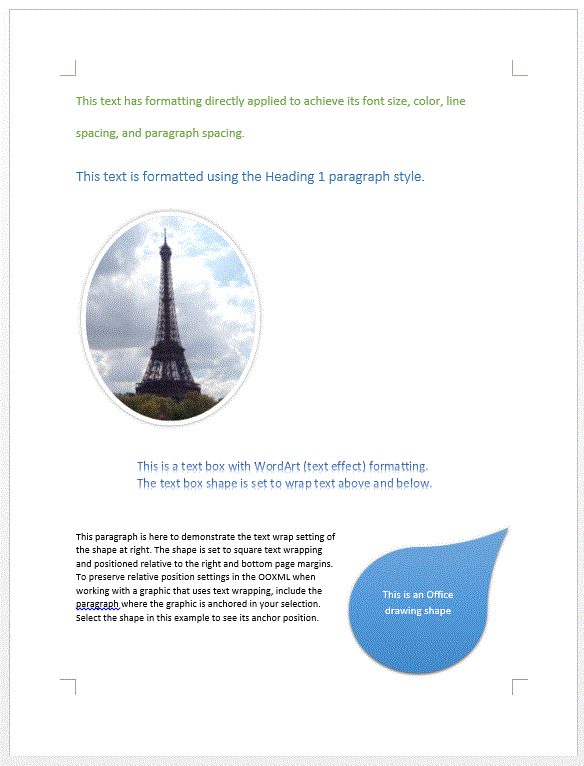
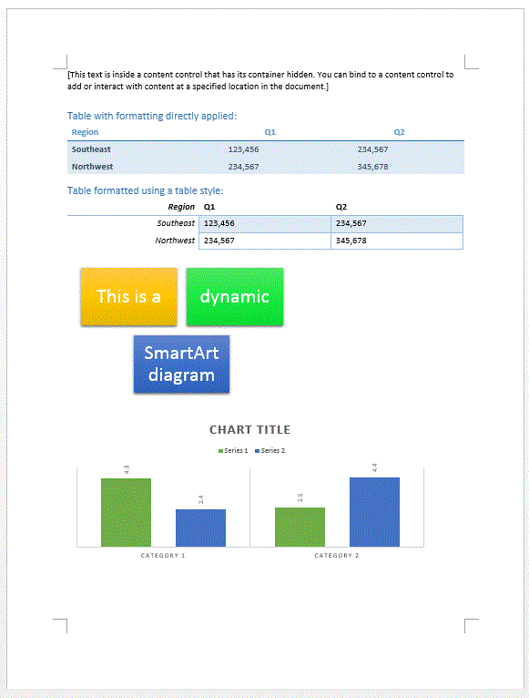
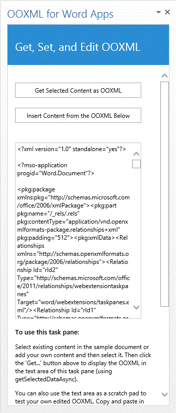

Summary: This sample app shows you how to use the JavaScript methods getSelectedDataAsync and setSelectedDataAsync to get or set a variety of rich content types in a Word document. It also can act as a scratch pad to provide you with an easy way to grab the Office Open XML for your own content and test your own edited Office Open XML snippets.
Description of the sample
The SampleDoc.docx file is set as the StartAction property of the task pane app. The document contains a range of common rich content types for Word, including the following:
-
formatted text
-
styled text
-
a formatted image
-
a text box using WordArt formatting
-
an Office drawing shape
-
a content control that can be used for binding to a specific location in the document
-
a formatted table
-
a styled table
-
a dynamic SmartArt graphic
-
a chart
The following screenshot (Figures 1a and Figure 1b) show how the document surface appears when the solution starts and the SampleDoc.docx file is opened.


| Note |
|---|
|
The sample uses Office Open XML (the ooxml coercion type) rather than HTML or plain text because OOXML coercion enables you to interact with virtually every type of content a user can insert in their document, such as in the examples you see in Figures 1a - 1b. |

When you select content and then click the 'Get…' button, the app uses the JavaScript getSelectedDataAsync method to generate a complete Office Open XML document package that includes the selected document content, and places it in the text area of the task pane (as shown in Figure 2).You can use the text area in that task pane as a scratch pad. Copy the Office Open XML markup you retrieve into an XML file, edit it to include just the information you need, and paste it back into the text area of the task pane to test your edited markup.
After you paste or edit the content in the text area of the task pane, you can click in a blank area of the document and then click the Insert… button on the task pane to test the integrity of your markup. That button uses the JavaScript setSelectedDataAsync method to insert the contents of the task pane text area as rich content in Word, using the ooxml coercion type.
Prerequisites
This sample requires:
-
Visual Studio 2012
-
Office 2013 tools for Visual Studio 2012
-
Word 2013
Key components of the sample
The sample app contains:
-
The WD_OpenXML_js project, which contains:
-
The WD_OpenXML_js.xml manifest file
-
The SampleDoc.docx document, which is prepopulated with various types of rich content
-
-
The WD_OpenXML_js Web project, which contains multiple template files. However, the two files that have been developed as part of this sample solution include:
-
WD_OpenXML_js.html (in the Pages folder). This contains the HTML user interface that is displayed in the task pane. It consists of two HTML buttons that extract and insert Office Open XML, a DIV where status messages will be written, a textarea HTML control that is used to show you Office Open XML markup, and instructional text
-
WD_OpenXML_js.js (in the Scripts folder). This script file contains code that runs when the app is loaded. This startup wires up the Click event handlers for the two buttons in WD_OpenXML_js.html. One of these buttons retrieves the selected document content as Office Open XML, and the other button inserts content into the document via OOXML coercion, using the contents of the text area in the task pane.All other files are automatically provided by the Visual Studio project template for apps for Office, and they have not been modified in the development of this sample app
-
Configure the sample
To configure the sample, open the WD_OpenXML_js.sln file with Visual Studio 2012. No other configuration is necessary.
Build the sample
To build the sample, choose the Ctrl+Shift+B keys.
Run and test the sample
To run the sample, choose the F5 key.
| Note |
|---|
|
When you use JavaScript to generate the Office Open XML markup for selected content, it creates an entire document package, which is a far larger payload than you need for inserting just your content. For help interpreting, editing, and simplifying your work with Office Open XML for Word apps, see Creating Better Apps for Word with Office Open XML. |
Troubleshooting
If the app starts with a blank document instead of the one shown in Figure 1, ensure the StartAction property of the WD_OpenXML_js project is set to SampleDoc.docx and not just to Word.
Change log
First release: Aug 2013.